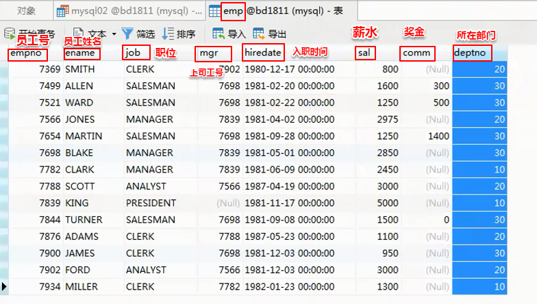
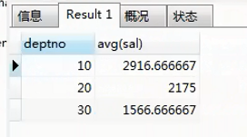

下面是三张数据库表的字段跟记录。下面的内容的很多查询语句都是基于这三张表写的



1.函数
1.1 单行函数
#1.数学函数
select ABS(-10); #绝对值
select CEIL(-12.3); #向上取整
select FLOOR(-12.3); #向下取整
select PI(); #π。圆周率
select RAND(); #随机数。范围是[0,1)
select MOD(5,2); #取模运算,即取余
select ROUND(12.46,1); #四舍五入。结果是12.5, 意思是保留小数点后1位
select ROUND(12.46,0); #四舍五入。结果是12, 意思是保留小数点后0位
select POW(2,10); #幂运算,相当于2^10
select SQRT(36); #开方,开根号
#2.字符函数(字符串运算:长度,转换大小写,连接,替换...)
#参数可以是:字段,表达式
select LENGTH(ename) from emp; #计算ename的字符串长度
select UPPER(ename) from emp; #将字符串中的字母小写转换为大写
select LOWER(ename) from emp; #将字符串中的字母大写转换为小写
select CONCAT('aa-',ename) from emp; #将两个字符串进行字符串的拼接
select SUBSTR('abcdef',1,3); #字符串的截取。结果是 abc。第一个参数是字符串，第二个参数是起始截取位置(位置下标从1开始而不是0,因为它表示的是位置而不是索引,索引肯定是从0开始),第三个参数是要截取的长度。
select REPLACE('abcdef','bcd','aa'); #字符串部分替换。第一个参数是字符串,第二个参数是要替换掉的子串,第三个参数是要替换成的子串。这里结果是 aaaef
select LPAD('aa',10,'xc'); #左填充。结果是 xcxcxcxcaa。意思是左边以某个字符来填充到一定长度。第一个参数是要填充的字符串, 第二个参数是填充完后字符串的长度,第三个参数是用来填充的字符或者字符串。
select RPAD('aa',11,'xc'); #右填充。结果是 aaxcxcxcxcx (注意当第二个参数为奇数和上面这个例子为偶数的区别)。意思是右边以某个字符来填充到一定长度。第一个参数是要填充的字符串, 第二个参数是填充完后字符串的长度,第三个参数是用来填充的字符或者字符串。
select trim(' ab c ');#去空格。只能去掉左右两边的空格。结果是ab c。
#3.日期函数
#下面三个都是获取当前时间
select NOW(); #获取现在日期+时间
select SYSDATE(); #获取系统日期+时间
select CURRENT_TIMESTAMP(); #获取当前时间戳
select CURRENT_DATE(); #获取当前日期
select CURRENT_TIME(); #获取当前时间
select YEAR(NOW()); #获取年份
select MONTH(NOW()); #获取月份
select DAY(NOW()); #获取日
#日期计算
select DATE_ADD('2018-09-09',interval 2 MONTH); #向前或向后计算日期。这里计算的是2018.09.09的两个月以后
select DATE_ADD('2018-09-09',interval -2 WEEK); #负号就代表向前计算日期。这里计算的是2018.09.09的两星期以前
select LAST_DAY('2019-02-02'); #计算该日期对应月份的最后一天。结果是 2019-02-28
1.2 聚合函数 (聚合函数通常喜欢和分组函数一起使用)
#1.对整张表进行聚合运算时,聚合的结果只有一条记录,所以要切忌将聚合的结果和其他字段放在一起查询,即任何字段不能和聚合运算放在同一句查询语句里(除非有group by 子句),放在一起查询那将会导致查询出来的的结果只有一条记录(注意, 只是导致了查询出来的结果不对,而不是执行报错。这样的sql语句依然可以成功执行, 不会报错),如
select ename,max(sal) from emp;
要知道select ename是会得到整张表的所有ename,结果并不是只有一条,这样和max(sal)放在一起会使得查询出来的结果只显示一条记录。所以要注意字段查询出来的结果和聚合运算出来的结果数量不匹配的问题。
但是这样写的话是可以的:
select ename,max(sal) from emp group by ename;
常见的聚合函数有:
select max(sal) from emp;
select min(sal) from emp;
select count(*) from emp; #统计所有记录数
select count(1) from emp; #和count(*)一样,统计所有记录数
select count(comm) from emp; #统计某字段的数量(统计时会将该字段为null的值排除在外)
select sum(sal) from emp;
select avg(sal) from emp;
1.3 分组函数(分组,每组返回一条记录)
group by 分组字段
#查询每一个部门的平均工资
select deptno,avg(sal) from emp group by deptno;
注意:有了分组后,分组字段就可以和聚合函数放在同一句查询语句里了。因为分完组对应的每个分组里,分组字段的值都是一模一样的,所以一组只返回一个值完全没问题(实际上返回的是该组的第一条记录对应的deptno的值)。所以deptno和avg(sal)一起每组返回一条记录是没有问题的。但如果查询语句是select ename,avg(sal) from emp group by deptno; 那就是错误的了,因为在根据deptno分组的每个分组里, ename字段的取值就不一定都是一样了。这个时候每组返回一个ename的值(实际上返回的是该组的第一条记录对应的ename字段的值),那就是哪个排在前面出现哪个值了,就和不分组时字段和聚合函数放在同一句查询语句里的情况一样了。所以只有分组字段key和聚合函数放在同一句查询语句里,其他字段不可以
查询结果如下:

having ( having主要用于分组之后再次进行一些操作。)
#求平均工资>2000的部门编号和平均工资
首先select deptno,avg(sal) from emp group by deptno where avg(sal) >2000; 这肯定是错误的,因为where子句要放在group by子句之前。其次select deptno,avg(sal) from emp where avg(sal) >2000 group by deptno; 这肯定也是错误的, 因为where子句中不能使用聚合函数, 其实也很好理解为什么有这个规定, 这里语句这样组织(设计的目的明显是为了先执行where子句筛选掉不需要的记录,再执行group by进行分组, 而where里出现了聚合函数的话,group by还有什么意义, where在group by之前执行, 也就是说where里的聚集函数会对所有记录进行聚合, 而不会先分组再聚合。所以这里要使用having。首先having的好处是在group by 之后执行,其次having可以使用聚合函数。
select deptno,avg(sal) from emp group by deptno having avg(sal) >2000;
having主要用于分组之后再次进行一些操作。
where和having区别:
1.顺序:where在group by之前,having在group by之后
2.是否能够使用聚合函数: where不能使用聚合函数,having可以
3.where和having可以同时使用，两个关键字使用的顺序不一样，where是计算结果前筛选，having是结果出来后筛选。
4. HAVING 只能与 SELECT 语句一起使用,而where还可以出现在DML语句里(insert into、 update、delete都可以和where搭配使用)。HAVING 通常在 GROUP BY 子句中使用。如果不使用 GROUP BY 子句，则 HAVING 的行为与 WHERE 子句一样。所以说having也不一定要有group by才能使用, 但一般都这样搭配。
1.4 加密函数
#注册 登录
select MD5('root'); #MD5方式进行加密,不可逆加密(即加密后不能解密)
select SHA('root'); #SHA方式进行加密,不可逆加密。
select PASSWORD('root'); #mysql用户密码默认使用的就是这种加密方式
2.高级查询
2.1 多表查询(关联查询,连接查询)
笛卡尔积: 集合A X 集合B。 下图这样的查询语句结果就是笛卡尔积。

1)内连接 [inner] join ... on ...(内连接分为等值连接和非等值连接) (join是inner join的简写)
等值连接（等值连接区别于自然连接）：在连接条件中使用等于号(=)运算符比较被连接列的列值，其查询结果中列出被连接表中的所有列，包括其中的重复属性。举例如下:
select * from emp,dept where emp.deptno = dept.deptno;(方言形式,但其实方言形式用的多)
select * from emp inner join dept on emp.deptno = dept.deptno; (标准形式) (这种写法是MySQL独有的?)
非等值连接： 在连接条件使用除等于运算符以外的其它比较运算符比较被连接的 列的列值。这些运算符包括>、>=、<=、<、!>、!<和<>。
select * from emp inner join dept on emp.deptno > dept.deptno;
select * from emp inner join dept on emp.deptno <> dept.deptno;
#当是等值连接且连接字段的名称一致时,可以直接使用using来代替标准形式
select * from emp inner join dept using(deptno);
内连接特点:
1.内连接后的记录与连接顺序无关(被连接的多张表没有主次之分) (当然不同的写法连接后的记录里的字段顺序可能不一样,但每条记录包含的内容以及总记录数是不会因为写法而改变的)
2.连接的字段的值在待连接的所有表里都出现的记录才会出现在结果集
2)自然连接 (natural join。自动对名称一致的字段进行等值连接,并且会去重除重复列(自然连接会去除重复列, 等值连接不会去除重复列), 后面不能跟连接条件) (下面这种写法是MySQL独有的?)
select * from emp natural join dept;
3)外连接 [outer] join ... on ...
左外连接: left [outer] join ... on ...
右外连接: right [outer] join ... on ...
左外连接和右外连接的特点:
1.有主从表之分,与连接顺序有关 (左外连接的主表为"left join"关键字左边的表, 右外连接主表为"right join"关键字左边的表)
2.以主表为驱动(基准),依次在从表进行匹配;如果匹配到则连接并显示在
结果集中;如果不能匹配到也显示在结果集中,并且主表没有的字段以null填充。
3. 左向外联接的结果集包括 "left join"关键字左边的表的所有行，而不仅仅是联接列所匹配的行。如果左表的某行在右表中没有匹配行，则在相关联的结果集行中右表的所有选择列表列均为空值。
右向外联接是左向外联接的反向联接。将返回右表("right join"关键字左边的表)的所有行。如果右表的某行在左表中没有匹配行，则将为左表返回空值。
外连接的特点:
而外连接又与左外连接、右外连接不同。不同在于: 外连接是把连接的多张表中每张表的没有匹配上的记录全都显示在结果集中,同样也是表中没有的字段就用null填充。但是左外连接和右外连接就是只有主表没有匹配上的记录才显示在结果集中。而外连接没有主从表之分,所以它展示所有表中相互没有匹配上的记录。
下面以左外连接为例进行详细的说明

上图中的查询结果如下: 可以看出只有十四条记录,从表中未被匹配的记录被忽略了

接来下是另一种情况,主表和从表顺序交换:

当主表变为dept时,主表中未被匹配的记录也作为一条结果记录被保留了下来。如下图

4)自连接:自身连接自身
#查询员工及其领导的姓名
select e1.ename,e2.ename from emp e1,emp e2 where e1.mgr = e2.empno;
2.2 子查询
嵌套查询,按最自然的想法查询的方式。
1)单行子查询: 子查询返回结果是一条记录 (注意: >,<,=,!=都是只能对应子查询结果返回的结果是一条记录)
select dname from dept where deptno = (select deptno from emp where empno = 7788);
#用主查询dept表每一次执行给的deptno, 来执行一遍子查询。
select dname from dept where deptno = (select deptno from emp where emp.empno = dept.deptno);
2)多行子查询: 子查询返回结果多条记录
要用in(当然一条记录用in也可以,所以,为了方便,子查询就用in吧)
#查询工资>2000的员工所在部门的名称
select dname from dept where deptno in(select distinct deptno from emp where sal > 2000);
select dname from dept where deptno=any(select distinct deptno from emp where sal > 2000);
其中, any:
=any 相当于in
>any 大于最小值
<any 小于最大值
all:
>all 大于最大值
<all 小于最小值
注意: 单行子查询和多行子查询的执行顺序是有区别的:
单行子查询: 先执行主查询,主查询将每条记录依次交给子查询;子查询使用主查询的记录里包含的信息进行自查询,
如果子查询能根据主查询提供的信息查询到满足条件的结果,则返回给主查询, 主查询根据子查询的结果继续查询
如果子查询中没有满足条件的记录,则子查询返回null(主查询根据null继续匹配?)
多行子查询: 先执行完子查询,子查询将结果返回给主查询,主查询继续执行后续操作。
#1.查询超过所在部门平均工资的员工信息
#第一种思路:子查询结果集作为一张表表join来使用 (以前用的少。好像效果还不错,易于理解)
#1.先求每个部门平均工资
select deptno,avg(sal) from emp group by deptno;
#2.关联emp表(将上面求得的子查询直接作为一张表来和其他表关联使用)
select emp.* from emp,(select deptno,avg(sal) avg from emp group by deptno) e
where emp.deptno = e.deptno and sal > e.avg;
#第二种思路:子查询作为条件来使用 (比较难于理解),这种的好处是不用分组。
select * from emp e1 where sal > (
select avg(sal) from emp e2 where e2.deptno = e1.deptno
);
上面这个sql语句的执行逻辑: (首先我们要理解到,sql语句也是从前往后执行的,当然有些关键字不一样,比如in)
#1.主查询遍历emp的每条记录
#2.主查询将自己所在记录的deptno传输给子查询
#3.子查询根据主查询的deptno查询指定部门的平均工资,返回给主查询
#4.主查询根据返回的结果执行后续操作
#相当于主查询遍历第一条记录时 子查询语句是
select * from emp e1 where sal > (
select avg(sal) from emp e2 where e2.deptno = 10
);
这样求出来的avg(sal)就是10号部门的平均工资,所以说不用分组查询,而且这里可以用">"也是因为
每次执行子查询只返回一个结果,正好也是因为没有分组
即主查询每遍历一条记录,子查询就执行一次select avg(sal) from emp e2 where e2.deptno = xx;
这样的话就相当主查询每遍历e1表的一条记录,子查询就遍历一遍e2表所有记录,求得e2.deptno = xx时的平均工资
#2.查询工资超过2000的员工所在部门的信息
select * from dept where deptno in(
select deptno from emp where sal > 2000);
select * from dept where exists
(select * from emp where sal > 2000 and dept.deptno = emp.deptno);
#in和exists区别
#1.in: 先执行完子查询,子查询将结果返回给主查询,主查询继续执行后续操作。
#2.exists: 先执行主查询,主查询将每条记录依次交给子查询;子查询使用主查询的记录里包含的信息进行自查询,
如果子查询能根据主查询提供的信息查询到满足条件的记录,则返回true, 查询结果显示主查询的查询结果;
如果子查询中没有满足条件的记录,则返回false,则不显示主查询的该条查询结果。(前面的嵌套查询中
的单行子查询也是一样的原理, 即>,<,=,!=)
#3.查询30号部门最高工资的员工信息及其部门信息(考虑最高工资有并列的情况)
select * from dept,
(select * from emp where deptno =30 and sal = (select max(sal)
from emp where deptno =30)) e
where e.deptno = dept.deptno;
#4.查询30号部门工资次高的员工信息(<any)
select * from emp where deptno = 30 and sal < any(select sal from emp where deptno = 30)
order by sal desc limit 1;
2.3 联合查询
union / union all:将多个结果集进行联合,合并成一个结果集,即求并集
其中union会对多个结果集中相同的记录去重、union all 不去重
条件: 多个结果集的字段必须一致
什么时候会用到联合查询?
#1.已经单独处理两个结果集,直接联合一下即可
#2.性能考虑。索引会大幅提升查找效率,但是索引不能和or一起用,这个时候只能用联合
#1.查询工资>2000的员工或者30号部门员工信息。
#普通写法
select * from emp where sal > 2000 or deptno = 30;
#联合查询写法
select * from emp where sal > 2000
union
select * from emp where deptno =30;
3.事务
1.存储引擎
mysql核心就是存储引擎。MySQL是通过存储引擎来操作增删改查的。
在mysql中有许多不同的存储引擎,存储机制、索引技巧、锁定水平都不太相同。
可以根据不同功能设置不同存储引擎(插件,可插拔)。
InnoDB是事务型数据库的首选，执行安全性数据库，行锁定和外键。mysql5.5之后默认使用。
MyISAM插入速度和查询效率较高，但不支持事务。
MEMORY将表中的数据存储在内存中，速度较快。

#查看存储引擎
show engines;
永久修改存储引擎: 找到my.ini配置文件:
C:\ProgramData\MySQL\MySQL Server 5.7\my.ini -->修改: default-storage-engine=INNODB
#查看mysql的编码方式是不是utf-8
show variables like '%char%'

修改MySQL的编码方式:找到my.ini配置文件:
[client]字段中加上一句:
default-character-set=utf8
[mysqld]字段加上两句:
character-set-server=utf8
collation-server=utf8_general_ci (设置排序规则编码)
重启mysql服务(通过命令行): net stop mysql/net start mysql (或者直接在"服务"里找到MySQL右键重启)
2.事务
由一组DML操作组成,要么同时成功,要么同时失败。
一个事务的步骤分三步:
开启事务
dml操作
提交事务/回滚事务
mysql默认自动提交事务,并且每一个增删改都默认在一个单独的事务里面,会将每个dml当做独立事务处理:
#查看事务是否自动提交
show variables like 'autocommit';
mysql一个事务执行多条dml语句的方法:(手动提交事务)
#1.首先要关闭事务自动提交
set autocommit = 0;
#写下一系列dml语句(在手动提交前,就算执行这些语句,执行结果也不会写入磁盘文件,只是在内存进行了修改而已)
delete from student where sid = 1;
delete from student where sid = 2;
delete from student where sid = 3;
#手动提交
commit; (如果这里是rollback; 则会直接回滚到执行这些语句前的状态)
#重新设置为自动提交事务的语句是:
set autocommit = 1;